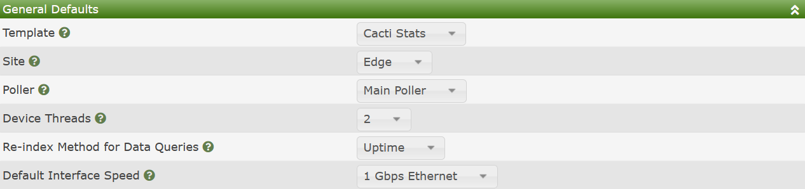
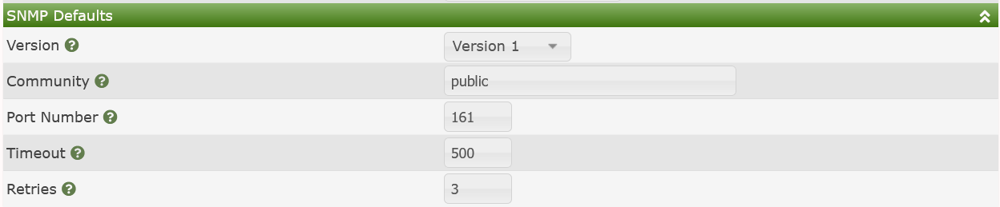
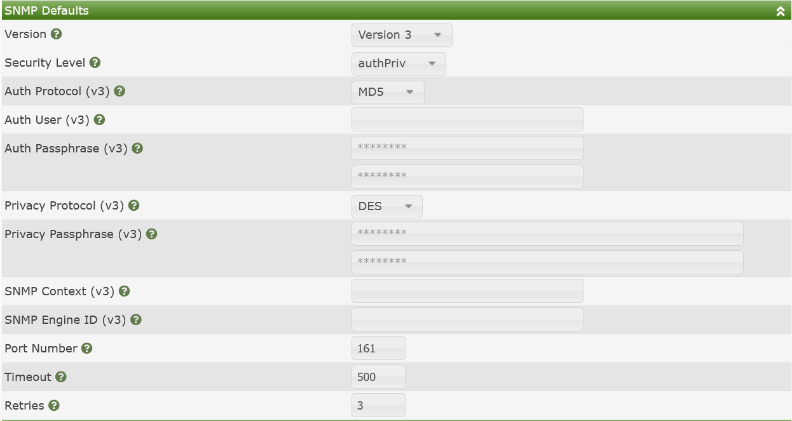
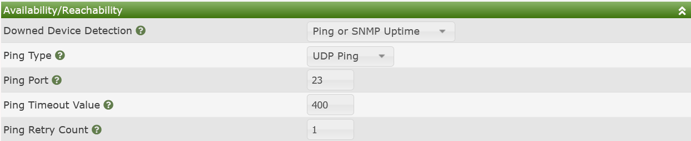

Cacti has multiple ways to create Devices. Those methods include:
When using any of these methods, Cacti needs a way to apply a default for a new Device if the user does not specify on, be it any of the three methods above. That is what this settings sub-tab if for.
In the image below, you can see the General Defaults. These settings cover a number of Device attributes.

Those settings include:
Template - The default Device Template. You might select Net-SNMP device if you are monitoring all Linux devices for example.
Site - The default physical location of the Device
Poller - The default Data Collector to assign new Devices to
Device Threads - The default number of Device Threads to assign to a new Device
Re-index Method for Data Queries - The default **Re-index" method for new Device Data Queries
Default Interface Speed - If the Device does not include ifHighSpeed what should the maximum speed of the interface be set to.
NOTE: Device Threads is only applicable when using the spine binary
Similar to the General Defaults, the SNMP Defaults control what SNMP settings to use for new *Devices if the user does not specify any. The image below shows the settings when using first SNMP v2 and then SNMP v3. If you are using SNMP v1 or v2, you will have much less required settings.


Those settings include:
Version - The default SNMP version to query using (v1, v2, v3)
Community - The default SNMP password to access the device (SNMP v1, v2)
Port Number - The default SNMP port number to poll (SNMP v1, v2, v3)
Timeout - The default SNMP Timeout (SNMP v1, v2, v3)
Retries - The default number of times to retry a query if SNMP times out (SNMP v1, v2, v3)
Security Level - The default Security Level (SNMP v3)
Auth Protocol - The default Authentication Portocol to use (SNMP v3)
Auth User - The default Authentication User to use (SNMP v3)
Auth Password - The default Authentication password to use (SNMP v3)
Privacy Protocol - The default Privacy Protocol to use (SNMP v3)
Privacy Pass-phrase - The default Privacy Pass-phrase to use (SNMP v3)
SNMP Context - The default SNMP Context to use (SNMP v3)
SNMP Engine ID - The default SNMP Engine ID to use (SNMP v3)
Cacti's Availability / Reachability define how to perform initial checks prior to polling to see if the Device is alive or not. Attempting to gather large amounts of data from a Device that is down, is counter-productive.
Availability / Reachability is generally performned using a ping. These pings come in many formats, and Cacti supports all of the reasonable ones. In the image below, you can see the settings for one of the combination cases. Depending on your ping method, you may receive less options.

Those options include:
Downed Device Detection - The method by which Cacti should ping the Device, SNMP pings involve querying a specific OID. Options include:
getnext query for the DevicePing Type - When using an options that leverages Ping above, which method
Ping Port - When using TCP or UDP ping, the port to ping
Ping Timeout Value - The ping timeout value in Milliseconds
Ping Retry Count - The number of times to retry the ping if it fails
The Up / Down Settings define how many polling cycles that a Device must not respond to be considered truly Down, and when at device is returning from Down, how many polling cycles to keep a device in Recovering state before returning it to Up. The image below shows the two settings for the Device. There is really no reason to explain these two settings in any additional detail.
Copyright (c) 2004-2024 The Cacti Group